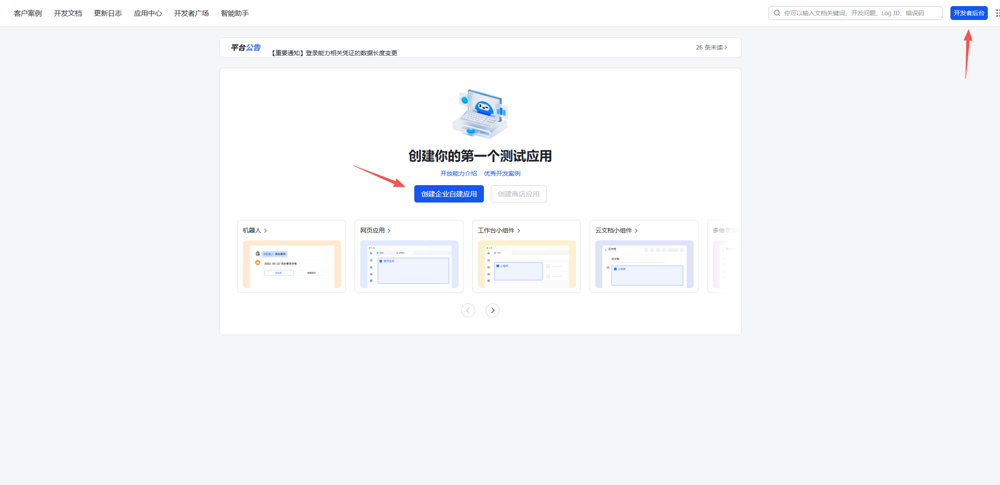
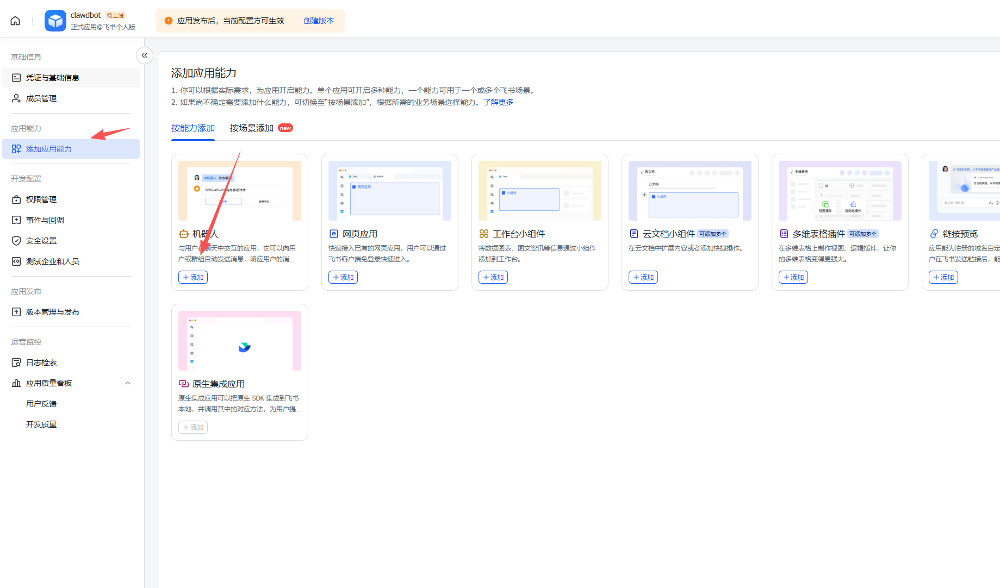
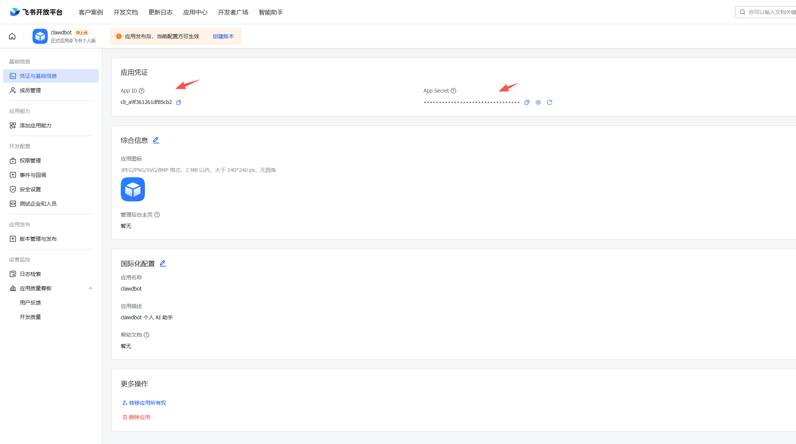
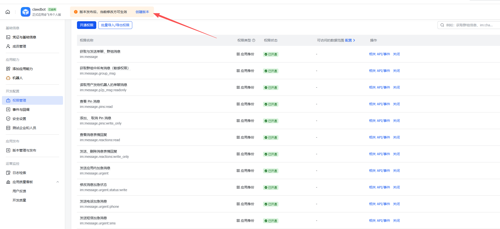

6 步完成飞书 AI 机器人配置 — 包含权限批量导入 & 配对指南
在另一个浏览器窗口中，打开飞书开放平台：
使用你的飞书账号登录。如果没有飞书账号，需要先注册一个。
登录后，在「我的应用」页面：
1. 点击右上角的 「创建应用」 按钮
2. 选择 「企业自建应用」（即使是个人使用也选这个）

3. 填写应用信息：
4. 点击 「创建」
创建完成后，立即添加机器人能力：
1. 在应用详情页的左侧菜单中，点击 「应用能力」
2. 点击 「添加应用能力」
3. 找到 「机器人」，点击 「添加」

在左侧菜单中点击 「权限管理」，然后点击右上角的 「批量开通」 按钮。
将下方 JSON 复制并粘贴到输入框中，点击 「确认」 即可一次性开通所有权限：
在左侧菜单点击 「凭证与基础信息」，可以看到：
点击 App Secret 旁边的「显示」按钮查看完整密钥，然后点击「复制」。

这是最关键的一步——不配置事件订阅，机器人将无法接收任何消息！
在左侧菜单中点击 「事件与回调」：
第一步：选择接收方式
1. 在「事件配置」页面，点击订阅方式旁的 「编辑」
2. 选择 「使用长连接接收事件」（即 WebSocket 模式）
3. 点击 「保存」
第二步：添加事件
1. 点击 「添加事件」 按钮
2. 搜索 im.message.receive_v1
3. 找到 「接收消息」 事件，点击添加
4. 点击 「保存」
配置完权限和事件后，需要发布应用才能生效：
1. 点击左侧菜单的 「版本管理与发布」
2. 点击 「创建版本」
3. 填写版本号（如 1.0.0）和更新说明
4. 设置可用范围（建议选择「全部成员」或指定人员）
5. 点击 「提交审核」

应用发布并审批通过后，还需要完成一次设备配对才能让机器人响应消息：
操作步骤：
1. 回到安装程序窗口，完成配置后启动 OpenClaw：
2. 在飞书中找到你的机器人（搜索你设置的机器人名称），发送一条任意消息
3. 机器人会回复一个 6 位数的配对码 (Pairing Code)
4. 在终端中运行配对命令：
例如：openclaw pairing approve feishu 123456
5. 配对成功后，再次发送消息，机器人就会正常响应了！
Q: 找不到「创建应用」按钮？
A: 登录飞书开放平台后，如果还没有团队，系统会先引导你创建一个团队。随便填个团队名称（如「我的工作室」）即可，不需要企业认证。创建完团队后就能看到「创建应用」按钮了。
Q: 没有「批量开通」按钮怎么办？
A: 部分飞书开放平台版本可能没有批量导入功能。此时需要在「权限管理」→「API 权限」标签页下，逐个搜索权限名称并开通。展开「消息与群组」和「通讯录」分类可以更快找到。
Q: 审批一直没通过？
A: 如果是个人创建的团队，你自己就是管理员，打开飞书 →「管理后台」→「应用审核」直接通过即可。
Q: 机器人添加到群后没反应？
A: 请逐项排查：
im.message.receive_v1 事件（步骤 4）openclaw gateway）Q: WebSocket 连接不上 / gateway 启动后没有收到消息？
A: 常见原因：
配置飞书.bat → 选项 3 进行全面诊断Q: 什么是 Pairing（配对）？
A: Pairing 是 OpenClaw 的安全机制，用于将飞书机器人与本地 OpenClaw 实例绑定。首次连接时，机器人会发送一个 6 位配对码，你需要在终端中确认配对。这确保了只有授权的设备可以控制机器人。配对只需做一次，信息会持久化保存。